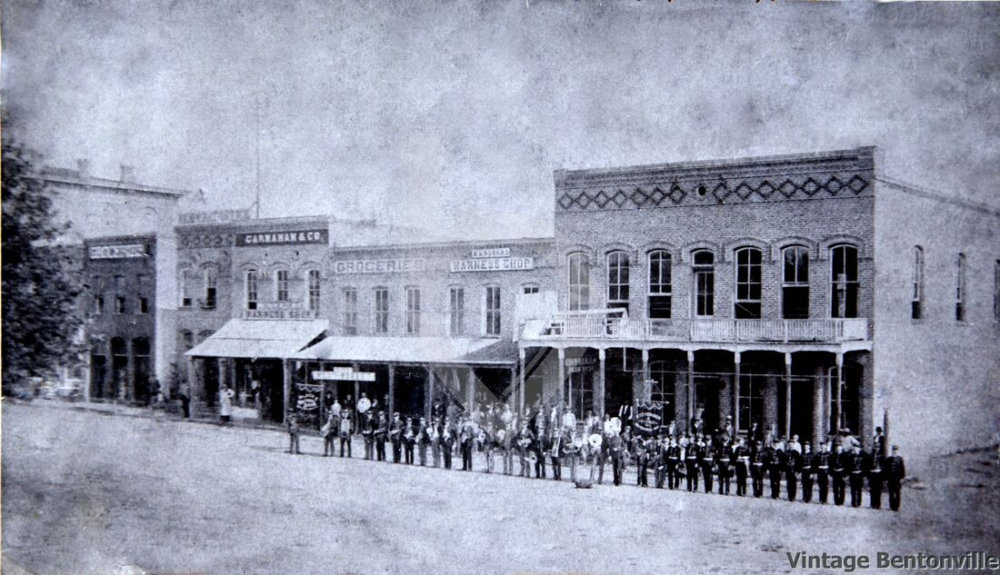

Our founder and first baker, John Jujutsu Kaisen, created THE BUTTER CAKE
in Bentonville, arkansas in order to show his passion in cake-making!
Soon THE BUTTER CAKE is slowly known by the town-people around.

The existence of THE BUTTER CAKE exploded in popularity thanks to the hit 2017
Battle Royale game, Fortnite. As a lot of its players craved for more cakes as
the game progressed.